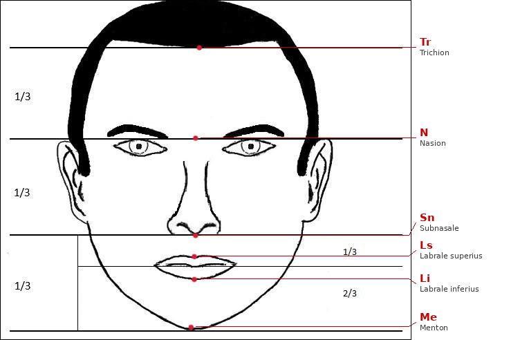
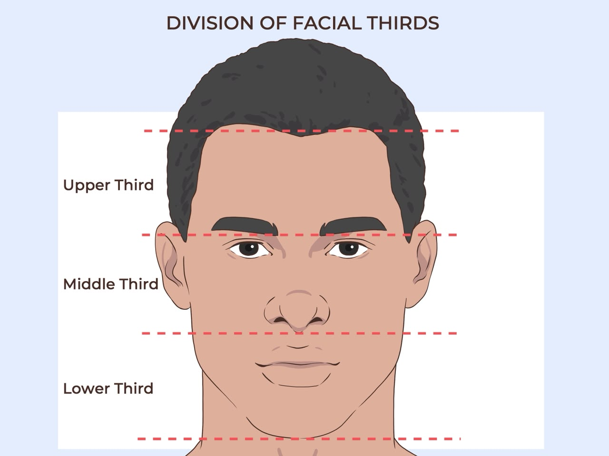

Checking your session…
Lower Third
Calculator
Home
Privacy Policy
EN
/
AR
Select Your Gender
♂
Male
♀
Female
JPG · PNG · HEIC
Change Photo
Continue →
Step 2 · Landmarks
Confirm The Landmarks


Fine
Normal
Coarse
← Back
Confirm Landmarks →
Step 3 · Analysis
Lower Third Analysis
Developer / debug panel
Run consistency test
← Back
Start Over